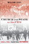

 <!DOCTYPE HTML PUBLIC "-//W3C//DTD HTML 4.0 Transitional//EN">
<html><!-- InstanceBegin template="/Templates/books.dwt" codeOutsideHTMLIsLocked="false" -->
<head>
<!-- InstanceBeginEditable name="doctitle" --> 
<title>Urban Life, Landscape and Policy</title>
<!-- InstanceEndEditable --> 
<link rel="stylesheet" href="style.css" type="text/css">
<!-- InstanceBeginEditable name="head" --><!-- InstanceEndEditable --> <!-- InstanceParam name="Our Books" type="URL" value="img/our_books.gif" -->
</head>
<!-- Site designed by D a w n  D a n i s h, Copyright 2005 Temple University.  All Rights Reserved. -->
<body bgcolor="#FFFFFF" leftMargin="0" topMargin="0" rightMargin="0">
<!-- top banner table -->
<table width="100%" border="0" cellpadding="0" cellspacing="0">
  <tr> 
    <td valign="top" align="left" width="100%" nowrap><a name="top"></a><!-- InstanceBeginEditable name="header" --><!-- InstanceEndEditable --></td>
  </tr>
  <!-- navigation -->
  <tr> 
    <td bgcolor="#990033"></td>
  </tr>
  <tr> 
    <td bgcolor="#E5DCCB"></td>
  </tr>
  <tr> 
    <td align="center" valign="top" nowrap bgcolor="3D607A"><span class="navigation"><a class="navigation" href="index.html" TITLE="Welcome to Temple University Press">Home</a> 
      | <a class="navigation" href="books.html" TITLE="Browse our catalog or search for a book">Our 
      Books</a> | <a class="navigation" href="contact.html" TITLE="Questions? Comments? Tell us!">Contact 
      Us</a> | <a class="navigation" href="order.html" TITLE="Online ordering or order by phone, fax, or mail">Place 
      an Order</a> | <a class="navigation" href="br.html" TITLE="Book Reviews">Media</a> 
      | <a class="navigation" href="press.html" TITLE="Meet the Press">Press 
      Info</a> | <a class="navigation" href="links.html" TITLE="Other university press resources">Links</a> 
      </span></td>
  </tr>
  <tr> 
    <td bgcolor="#3D607A"></td>
  </tr>
  <tr> 
    <td bgcolor="#333333"></td>
  </tr>
</table>
<table border="0" cellspacing="0" cellpadding="0" width="100%">
  <!--DWLayoutTable-->
    <tr valign="top"> 
      <td width="200" align="left" valign="top" bgcolor="#E5DCCB"> 
        <!-- left menu -->
         <table border="0" cellspacing="0" cellpadding="5" width="100%">
          <tr valign="top"> 
            <td valign="top" align="left"><p class="leftnav"><a href="awards.html" TITLE="Read about award-winning books"> 
              Award-Winning Books</a><p class="leftnav">
                <a href="subjects.html" TITLE="Over 30 subject categories to browse">Subject 
                Index</a><p class="leftnav">
                <a href="series.html" TITLE="Books in series">Series 
                Listing</a><p class="leftnav">
                <a href="studyguides/index.html" TITLE="For further study">Study 
                Guides</a><br>&nbsp;</td>
          </tr>
        </table></td>      
    <td valign="top" align="left" width="100%"> 
      <!-- InstanceBeginEditable name="content table" --> 
      <table border="0" cellspacing="0" cellpadding="12" width="100%">
        <!--DWLayoutTable-->
        <tr> 
          <td colspan="2"><p>The <em>Urban Life, Landscape, and Policy Series</em>, edited by David Stradling, Larry Bennett, and Davarian Baldwin, was founded by the late Zane L. Miller to publish books that examine past and contemporary cities, focusing on cultural and social issues. The editors seek proposals that analyze processes of urban change relevant to the future of cities and their metropolitan regions, and that examine urban and regional planning, environmental issues, and urban policy studies, thus contributing to ongoing debates. </p>            <p></td>
        </tr>	
		<tr> 
          <td width="75" valign="top" align="right"><p class="normal"><a href="titles/2232_reg.html"></a></td>
          <td valign="top" align="left"><p class="normal"><a href="titles/2232_reg.html"><b>Atlanta Unbound<br>
          </b>
         Enabling Sprawl through Policy and Planning<br>
              </a>Basmajian, Carlton Wade</p>
			<p class="small">
			288 pp &#149; 7x10 &#149; Fall 2013<br> 
                        paper  978-1-4399-0940-9<br>
            cloth  978-1-4399-0939-3
         <br>
               </p></td>
        </tr>
		<tr> 
          <td width="75" valign="top" align="right"><p class="normal"><a href="titles/2351_reg.html"></a></td>
          <td valign="top" align="left"><p class="normal"><a href="titles/2351_reg.html"><b>Walking in Cities<br>
		  </b>Quotidian Mobility as Urban Theory, Method, and Practice
<br></a>
    edited by Brown, Evrick and Timothy Shortell</p>
			<p class="small"> 292 pp &#149; 6x9 &#149; Fall 2015<br>
			paper  978-1-4399-1221-8  <br>
			cloth  978-1-4399-1220-1</td>
        </tr>
		<tr> 
          <td width="75" valign="top" align="right"><p class="normal"><a href="titles/2399_reg.html"></a></td>
          <td valign="top" align="left"><p class="normal"><a href="titles/2399_reg.html"><b>A Nice Place to Visit<br>
		  </b>Tourism and Urban Revitalization in the Postwar Rustbelt
<br></a>
    Cowan, Aaron </p>
			<p class="small"> 236 pp &#149; 6x9 &#149; Spring 2016<br>
			paper  978-1-4399-1346-8  <br>
			cloth  978-1-4399-1345-1</td>
        </tr>
		<tr> 
          <td width="75" valign="top" align="right"><p class="normal"><a href="titles/2303_reg.html"></a></td>
          <td valign="top" align="left"><p class="normal"><a href="titles/2303_reg.html"><b>The War on Slums in the Southwest<br>
          </b>
         Public Housing and Slum Clearance in Texas, Arizona, and New Mexico, 1935-1965<br>
              </a>Fairbanks, Robert B.</p>
			<p class="small">
			252 pp &#149; 6x9 &#149; Spring 2014<br> 
            paper 978-1-4399-1116-7<br>
            cloth  978-1-4399-1115-0
           </p></td>
        </tr>
		<tr> 
          <td width="75" valign="top" align="right"><p class="normal"><a href="titles/2072_reg.html"></a></td>
          <td valign="top" align="left"><p class="normal"><a href="titles/2072_reg.html"><b>The Public and Its Possibilities<br>
          </b>
          Triumphs and Tragedies in the American City<br>
              </a>Fairfield, John D.</p>
			<p class="small">
			368 pp &#149; 6x9 &#149; Spring 2010<br> 
			paper  978-1-4399-0211-0<br>
            cloth  978-1-4399-0210-3<br>
               </p></td>
        </tr>
		<tr> 
          <td width="75" valign="top" align="right"><p class="normal"><a href="titles/2022_reg.html"></a></td>
          <td valign="top" align="left"><p class="normal"><a href="titles/2022_reg.html"><b>To The City<br>
              </b>Urban Photographs of the New Deal<br>
              </a>Foulkes, Julia L.</p>
			<p class="small">
			142 pp &#149; 6x9 &#149; Fall 2010<br>
			paper  978-1-59213-998-9 <br>
			cloth  978-1-59213-997-2<br>
               </p></td>
        </tr>
		<tr> 
          <td width="75" valign="top" align="right"><p class="normal"><a href="titles/2369_reg.html"></a></td>
          <td valign="top" align="left"><p class="normal"><a href="titles/2369_reg.html"><b>The Politics of Staying Put<br>
          </b>
       Condo Conversion and Tenant Right-to-Buy in Washington, DC<br>
              </a>Gallaher, Carolyn </p>
			<p class="small">
			282 pp &#149; 6x9 &#149; Spring 2016<br>
            paper 978-1-4399-1265-2<br> 
            cloth 978-1-4399-1264-5
           </p></td>
        </tr>
		<tr> 
          <td width="75" valign="top" align="right"><p class="normal"><a href="titles/2126_reg.html"></a></td>
          <td valign="top" align="left"><p class="normal"><a href="titles/2126_reg.html"><b>Environmental Activism and the Urban Crisis<br>
          </b>
        Baltimore, St. Louis, Chicago<br>
              </a>Gioielli, Robert R.</p>
			<p class="small">
			224 pp &#149; 6x9 &#149; Spring 2014<br>
            paper 978-1-4399-0466-4<br> 
            cloth 978-1-4399-0465-7
           </p></td>
        </tr>
		<tr> 
          <td width="75" valign="top" align="right"><p class="normal"><a href="titles/2081_reg.html"></a></td>
          <td valign="top" align="left"><p class="normal"><a href="titles/2081_reg.html"><b>Second Cities</b><br>
              Globalization and Local Politics in Manchester and Philadelphia</a><br>Hodos, Jerome I.</p>
			<p class="small"> 
			264 pp &#149; 6x9 &#149; Spring 2011<br>
			paper  978-1-43990-232-5 <br>
           cloth  978-1-43990-231-8<br>
               </p></td>
        </tr>	
        <tr> 
          <td width="75" valign="top" align="right"><p class="normal"><a href="titles/2036_reg.html"></a></td>
          <td valign="top" align="left"><p class="normal"><a href="titles/2036_reg.html"><b>Patriotic Professionalism in Urban China</b><br>
              Fostering Talent</a><br>Hoffman, Lisa M.</p>
			<p class="small"> 
			216 pp &#149; 6x9 &#149; Spring 2010<br>
			paper  978-1-4399-0035-2 <br>
           cloth  978-1-4399-0034-5<br>
               </p></td>
        </tr>	
		<tr> 
          <td width="75" valign="top" align="right"><p class="normal"><a href="titles/2079_reg.html"></a></td>
          <td valign="top" align="left"><p class="normal"><a href="titles/2079_reg.html"><b>Beyond Preservation <br>
		  </b>Using Public History to Revitalize Inner Cities<br>
          </a>Hurley, Andrew</p>
			<p class="small"> 248 pp &#149; 6x9 &#149; Spring 2010<br>
			paper  978-1-43990-229-5 <br>
			cloth  978-1-43990-228-8<br>
               </p></td>
        </tr>
        		<tr> 
          <td width="75" valign="top" align="right"><p class="normal"><a href="titles/2257_reg.html"></a></td>
          <td valign="top" align="left"><p class="normal"><a href="titles/2257_reg.html"><b>Church and State in the City<br>
		  </b>Catholics and Politics in Twentieth-Century San Francisco<br>
          </a>Issel, William</p>
			<p class="small"> 330 pp &#149; 6x9 &#149; Fall 2012<br>
			paper  978-1-4399-0992-8<br>
			cloth  978-1-4399-0991-1<br>
			   </td>
        </tr>
		 <tr> 
          <td width="75" valign="top" align="right"><p class="normal"><a href="titles/2034_reg.html"></a></td>
          <td valign="top" align="left"><p class="normal"><a href="titles/2034_reg.html"><b>For Both Cross and Flag<br>
              </b>Catholic Action, Anti-Catholicism, and National Security Politics in World War II San Francisco</a><br>
			  Issel, William</p>
			<p class="small"> 216 pp &#149; 5.5x8.25 &#149; Fall 2009<br>
          cloth  978-1-4399-0028-4<br>
               </p></td>
        </tr>	
              <tr> 
          <td width="75" valign="top" align="right"><p class="normal"><a href="titles/2252_reg.html"></a></td>
          <td valign="top" align="left"><p class="normal"><a href="titles/2252_reg.html"><b>"Building Like Moses with Jacobs in Mind"<br>
              </b>Contemporary Planning in New York City<br></a>Larson, Scott </p>
            <p><span class="small">198 pp &#149; 6x9 &#149; Spring 2013<br>
              paper  978-1-4399-0970-6
              <br>
			  cloth  978-1-4399-0969-0
            </span></p>
			</td>
        </tr>
        <tr> 
          <td width="75" valign="top" align="right"><p class="normal"><a href="titles/2418_reg.html"></a></td>
          <td valign="top" align="left"><p class="normal"><a href="titles/2418_reg.html"><b>The Death and Life of the Single-Family House</b><br>Lessons from Vancouver on Building a Livable City<br>
              </a>Lauster, Nathanael </p>
            <p><span class="small">262 pp &#149; 6x9 &#149; Fall 2016<br>
              paper  978-1-4399-1394-9<br>
		    cloth  978-1-4399-1393-2</span></p>
		  </td>
        </tr>
		<tr> 
          <td width="75" valign="top" align="right"><p class="normal"><a href="titles/2310_reg.html"></a></td>
          <td valign="top" align="left"><p class="normal"><a href="titles/2310_reg.html"><b>Vanishing Eden<br>
		  </b>White Construction of Memory, Meaning, and Identity in a Racially Changing City
<br></a>
   Maly, Michael T. and Heather M. Dalmage</p>
			<p class="small"> 198 pp &#149; 6x9 &#149; Fall 2015<br>
			paper  978-1-4399-11119-8  <br>
			cloth  978-1-4399-1118-1</td>
        </tr>
		<tr> 
          <td width="75" valign="top" align="right"><p class="normal"><a href="titles/2357_reg.html"></a></td>
          <td valign="top" align="left"><p class="normal"><a href="titles/2357_reg.html"><b>Building the Urban Environment<br>
		  </b>Visions of the Organic City in the United States, Europe, and Latin America
<br></a>
     Platt, Harold L.</p>
			<p class="small"> 302 pp &#149; 6x9 &#149; Fall 2015<br>
			paper  978-1-4399-1237-9 <br>
			cloth  978-1-4399-1236-2</td>
        </tr>
		<tr> 
          <td width="75" valign="top" align="right"><p class="normal"><a href="titles/2129_reg.html"></a></td>
          <td valign="top" align="left"><p class="normal"><a href="titles/2129_reg.html"><b>Fire on the Prairie<br>
		  </b>Harold Washington, Chicago Politics, and the Roots of the Obama Presidency
<br></a>
            Rivlin, Gary </p>
			<p class="small"> 312 pp &#149; 6x9 &#149; Fall 2012<br>
			paper  978-1-43990-492-3 <br>
			cloth  978-1-43990-491-6<br>
			   </td>
        </tr>
		 <tr> 
          <td width="75" valign="top" align="right"><p class="normal"><a href="titles/2347_reg.html"></a></td>
          <td valign="top" align="left"><p class="normal"><a href="titles/2347_reg.html"><b>The Mutual Housing Experiment<br>
              </b>New Deal Communities for the Urban Middle Class</a><br>
	Szylvian, Kristin M. </p>
			<p class="small"><br>312 pp &#149; 6x9 &#149; 
              Fall 2016<br>
             paper 978-1-43991-206-5<br>cloth  978-1-4399-1205-8</p></td>
        </tr>	
        <tr> 
          <td width="75" valign="top" align="right"><p class="normal"><a href="titles/2410_reg.html"></a></td>
          <td valign="top" align="left"><p class="normal"><a href="titles/2410_reg.html"><b>Believing in Cleveland</b><br>
		  Managing Decline in “The Best Location in the Nation”</a><br>
			 Souther, J. Mark </p>
			<P class="small"> 288 pp &#149; 6x9 &#149; Fall 2017<br>
             paper 978-1-4399-1373-4<br>
			cloth  978-1-4399-1372-7<br>
               </P></td>
        </tr>
          
<tr> 
          <td width="75" valign="top" align="right"><p class="normal"><a href="titles/2012_reg.html"></a></td>
          <td valign="top" align="left"><p class="normal"><a href="titles/2012_reg.html"><b>Communities and Crime<br>
              </b>An Enduring American Challenge<br>
              </a>Wilcox, Pamela, Francis T. Cullen, and Ben Feldmeyer</p>
            
			<p class="small"> 
			282 pp &#149; 6x9 &#149; Fall 2017<br>
            paper  978-1-59213-974-3 <br>
			cloth  978-1-59213-973-6<br>
               </td>
        </tr>

		<tr> 
          <td width="75" valign="top" align="right"><p class="normal"><a href="titles/2349_reg.html"></a></td>
          <td valign="top" align="left"><p class="normal"><a href="titles/2349_reg.html"><b>Ethnic Renewal in Philadelphia's Chinatown<br>
		  </b>Space, Place, and Struggle
<br></a>
     Wilson, Kathryn E. </p>
			<p class="small"> 278 pp &#149; 6x9 &#149; Spring 2015<br>
			paper  978-1-4399-1215-7 <br>
			cloth  978-1-4399-1214-0</td>
        </tr>
        <!-- <tr> 
          <td width="75" valign="top" align="right"><p class="normal"><a href="titles/1916_reg.html"></a></td>
          <td valign="top" align="left"><p class="normal"><a href="titles/1816_reg.html"><b>Silent Gesture<br>
              </b>The Autobiography of Tommie Smith<br>
              </a>Smith, Tommie</p>
            <p class="small">288 pp &#149; 6x9 &#149; Spring 2007<br>
              cloth 1-59213-639-7<br>
              EAN 978-1-59213-639-1</p></td>
        </tr> -->
        </table>
      <!-- InstanceEndEditable --><br>
	  <table align="left" border="0" cellspacing="0" cellpadding="12" width="100%"><!--DWLayoutTable-->
        <tr> 
          <td width="100%" align="left" valign="top"> 
            <p class="top"><a href="#top">BACK 
              TO TOP</a></p></td>
        </tr>
      </table></td>
    </tr>
  </center>
  </font> 
</table>
<!-- footer table -->
<table border="0" cellspacing="0" cellpadding="0" width="100%">
    <tr> 
      <td colspan="2" bgcolor="#990033"></td>
    </tr>
    <tr> 
      <td colspan="2" bgcolor="#E5DCCB"></td>
    </tr>
    <tr> 
      <td colspan="2" align="center" valign="top" nowrap bgcolor="3D607A"><span class="navigation"><a class="navigation" href="index.html" TITLE="Welcome to Temple University Press">Home</a> 
        | <a class="navigation" href="books.html" TITLE="Browse our catalog or search for a book">Our 
        Books</a> | <a class="navigation" href="contact.html" TITLE="Questions? Comments? Tell us!">Contact 
        Us</a> | <a class="navigation" href="order.html" TITLE="Online ordering or order by phone, fax, or mail">Place 
        an Order</a> | <a class="navigation" href="media.html" TITLE="TU Press in the News">Media</a> 
        | <a class="navigation" href="press.html" TITLE="Meet the Press">Press 
        Info</a> | <a class="navigation" href="links.html" TITLE="Other university press resources">Links</a> 
        </span> </td>
    </tr>
    <tr> 
      <td colspan="2" bgcolor="#3D607A"></td>
    </tr>
    <tr> 
      <td colspan="2" bgcolor="#333333"></td>
    </tr>
    <tr> 
      <td width="50%" valign="top" align="left" nowrap> <span class="small">&nbsp;<a href="copyright.html" TITLE="Web Copyright Policy">&copy;</a> 
        2005<a href="http://www.temple.edu" target="new" TITLE="Link to Temple University home page"> 
        Temple University</a>. All Rights Reserved.</span><br></td>
      <td width="50%" valign="top" align="right" nowrap> <span class="small"><a href="mailto:tempress@temple.edu">Webmaster&nbsp;</a></span><br></td>
    </tr>
  </table>
</body>
<!-- InstanceEnd --></html>